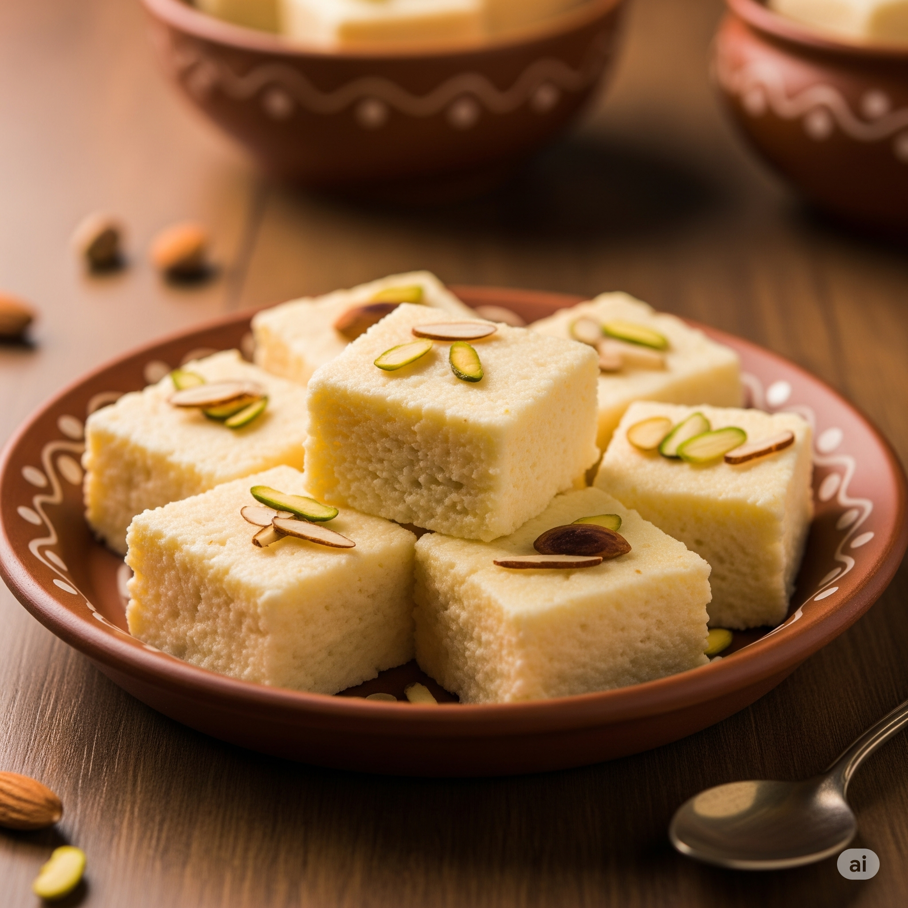

Kalakand Recipe

Rich and Granular Indian Sweet!
Kalakand is a popular Indian sweet known for its rich, granular texture and milky flavor. Made from solidified, sweetened milk and paneer (Indian cheese), it's often flavored with cardamom and garnished with nuts. Perfect for festivals or a special treat!
Ingredients
For Kalakand:
- 1 liter full-fat milk
- 1/4 cup (60ml) lemon juice or vinegar (diluted with equal water)
- 1/2 cup (100 grams) sugar (adjust to taste)
- 1/2 teaspoon green cardamom powder
- 1 tablespoon ghee (for greasing)
- 2 tablespoons chopped pistachios or almonds (for garnish)
Instructions
- Prepare Paneer: Bring 1 liter of milk to a boil in a heavy-bottomed pan. Once boiling, reduce heat and gradually add diluted lemon juice/vinegar, stirring constantly until the milk curdles and the whey separates. Do not over-curdle.
- Drain Paneer: Drain the curdled milk through a cheesecloth or muslin cloth. Gently rinse the paneer under cold water to remove any lemon juice taste. Squeeze out excess water, but leave some moisture; don't make it too dry. Crumble the paneer lightly.
- Reduce Milk: In a separate heavy-bottomed pan, bring another 1 liter of full-fat milk to a boil. Reduce the heat to medium-low and let it simmer, stirring frequently to prevent scorching at the bottom and sides. Continue to cook until the milk thickens and reduces to about half its original volume, forming a thick rabri-like consistency. This will take around 30-45 minutes.
- Combine and Cook: Add the crumbled paneer and sugar to the reduced milk. Mix well. Continue to cook on medium-low heat, stirring continuously, until the mixture thickens further and starts leaving the sides of the pan. This process might take another 15-20 minutes. The mixture should be granular but hold its shape.
- Flavor and Set: Remove from heat and stir in the green cardamom powder. Quickly transfer the hot mixture to a greased tray or plate (greased with ghee). Spread evenly to your desired thickness (about 1-inch thick).
- Garnish and Chill: Sprinkle chopped pistachios or almonds evenly over the top. Gently press them down so they stick. Let the kalakand cool completely at room temperature, then refrigerate for at least 2-3 hours to set firmly.
- Cut and Serve: Once set, cut the kalakand into desired square or diamond-shaped pieces. Serve fresh.
Home